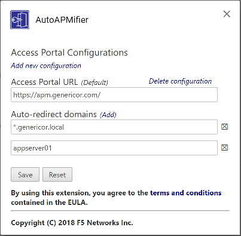

Configuring AutoAPMifier¶
Note
Before you can configure the extension, you must accept the End-User License Agreement. You need to click the link to read the EULA before the checkbox to accept the agreement will be enabled.
The Options Screen¶

Access Portal Configurations¶
You need to define one or more Access Portal Configurations to use the extension.
Adding a new Configuration¶
- Click the “Add new configuration” link to add a new APM configuration
- Enter the URL of your APM Portal.
Default Configuration¶
If you have more than one Access Portal configured, you can select which one is the default configuration. When you click the AutoAPMifier icon in the extensions area of your browser, it will APMify the active tab through the default APM.
Auto-Redirect Domains¶
For each Access Portal configuration, you can define one or more Auto-Redirect domains. These are the internal domains that AutoAPMifier will watch for and redirect through the APM portal.
You can specify either a specific FQDN, or a wildcard to match all subdomains of a particular domain. If a URL matches both a wildcard domain and an individual FQDN in differnet APM configurations, the more specific (i.e.: the individual FQDN) takes precedence.
| Pattern | Matches |
|---|---|
| *.intdomain.local | intdomain.local
app1.intdomain.local
app2.intdomain.local
|
| intdomain.local | intdomain.local only
|
| *intdomain.local | Not a valid pattern. you must include a “.” after the asterisk. |
Adding a new Auto-Redirect Domain¶
- Click the “Add” link in the “Auto-Redirect Domains” section for the appropriate Access Portal configuration.
- Enter the domain pattern you want to match.
Saving or Resetting the Configuration¶
Changes do not take effect until they are saved. Click the “Save” button to save and commit the changes, or the “Reset” button to revert back to the previously saved settings.